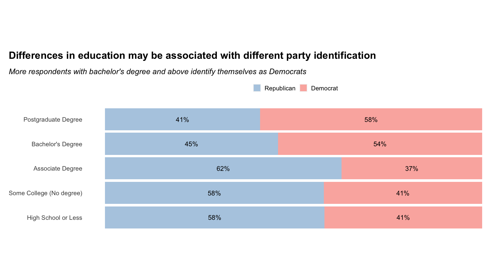
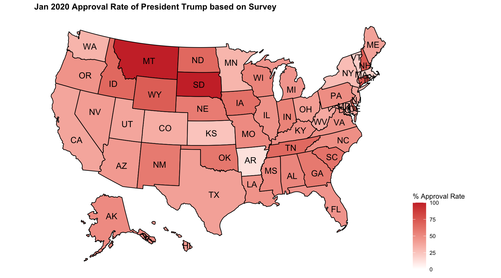
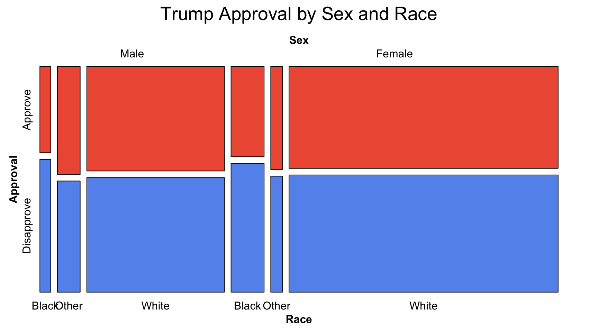

Chapter 5 Results
In this chapter, we are going to present our answers to each of the questions we proposed in the introduction section and also our process to come up with the answers and our conclusions. Below are our questions proposed in the introduction chapter for your reference:
What are opinions of people who identified with different political parties on various political and societal matters? What can we conclude about the political ideologies of different parties?
Are political affiliations associated with the level of education, religious beliefs, gender, or income level?
Are the approval rate of Donald Trump associated with race and sex?
5.1 Opinions of people identified with different parties on different matters
As we mentioned earlier in the introduction and data chapter, this January 2020 Political Survey conducted by Pew Research Center primarily surveys American people with a set of comprehensive political questions that encompass multiple aspects of the American politics. The first question is mainly about opinions of respondents identified with different political parties, and we hope to find out the primary political interests of each party and how their opinions compare on different political-relevant matters. This section would go over multiple social and political topics that were asked for respondents’ opinions.
5.1.1 Conflicts between different social groups in America
For this topic, we choose the variables that document the political party the respondent identifies with and the respondent’s opinion on how they view the level of conflicts between the following opposing groups: i) Poor people and rich people ii) Black people and white people iii) People who live in cities and people who live in rural areas iv) Young people and older people v) Democrats and Republicans.
We’ll use faceted bar chart to visualize the findings for this matter. In addition, for the cleanness of our analysis and visualization, we removed people who were not clear about their party identification (refused or not sure) and who did not respond with a clear answer on the level of conflicts they perceive between each opposing social group (refused/Can’t choose).

From the graph above, we can immediately conclude that a majority of respondents, no matter what party they identified with, believe that there is at least some level of conflicts between each of the 5 opposing groups. Among all 5 groups, (Young, Old) and (People in cities, People in rural areas) are the 2 pairs with least perceived conflicts among all 5, with more than half of the respondents from each party selecting “not very strong conflicts” or “there are no conflicts”. On the contrary,the conflicts between Democrats and Republicans are perceived as the most strong, with more than 70% of respondents from each political party replying with “very strong conflicts”. It’s interesting to see that, both the actors of the conflict, Democrats and Republicans, and the bystanders, the political Independents, share the same opinion on this matter.
Differences among the 3 political groups:
Compared to the other 2 groups, Republicans, in general, perceive less strong conflicts between Poor and Rich.
Democrats perceive the conflicts between Black and White people to be a lot stronger than the other 2 groups do.
5.1.2 Other Debating Social Topics
In this subsection, we would be looking at the democrats’, republicans’, and independents’ opinions on each of the following three questions included in the survey, and finding out if there are differences in their opinions on the 3 matters. Below are the survey questions:
Would you strongly favor, somewhat favor, somewhat oppose, or strongly oppose a single national health insurance program run by the government, sometimes called “Medicare for all,” that would replace private insurance?
Would you strongly favor, somewhat favor, somewhat oppose, or strongly oppose making tuition at public colleges and universities free for all American students?
Do you strongly favor, favor, oppose or strongly oppose the death penalty for persons convicted of murder?
 It’s not surprising to see that a majority democrats and republicans disagree on all 3 topics, while independents are taking the middle ground. Democrats are more inclined to reduce death penalty, offer cheap resources for higher education, and replace expensive private insurance with the “Medicare for all” offered by the government, while republicans maintain the opposite views on all 3.
It’s not surprising to see that a majority democrats and republicans disagree on all 3 topics, while independents are taking the middle ground. Democrats are more inclined to reduce death penalty, offer cheap resources for higher education, and replace expensive private insurance with the “Medicare for all” offered by the government, while republicans maintain the opposite views on all 3.
5.2 Political Affliations, Sex, Race, and Education
5.2.1 Analysis and findings
In this section, we’ll take a look at whether there’s any association between political affiliation of a respondent and their sex/race/education. Each of the factors will be examined through percent stacked bar chart to compare difference across the groups. For the purpose of our analysis, we removed respondents who did not exhibit a bipolar political interest; in other words, we only included respondents who identified as either a republican or democrat. In addition, we’ll discuss the limitation of our analysis at the end of this section.
 The first factor we investigate is Sex (not gender). Among respondents that give a firm response on this question (either male or female), we didn’t see a significant difference in the proportion of male and female respondents identified with each party. The percentage of female respondents in this survey identified as democrats is roughly the same as that of male respondents. Based on the data available from this survey, we can only conclude here that sex doesn’t seem to be a factor associated with party identification.
The first factor we investigate is Sex (not gender). Among respondents that give a firm response on this question (either male or female), we didn’t see a significant difference in the proportion of male and female respondents identified with each party. The percentage of female respondents in this survey identified as democrats is roughly the same as that of male respondents. Based on the data available from this survey, we can only conclude here that sex doesn’t seem to be a factor associated with party identification.
 The graph above shows the proportion of people of each race category identified with a democrat or republican. We can observe that, more than half of the white respondents identified themselves as a republican, while less than half of black respondents or respondents of some other race identified themselves as a republican. The observable disparity may indicate some association between race and party identification, and being white may have some positive association with being republican.
The graph above shows the proportion of people of each race category identified with a democrat or republican. We can observe that, more than half of the white respondents identified themselves as a republican, while less than half of black respondents or respondents of some other race identified themselves as a republican. The observable disparity may indicate some association between race and party identification, and being white may have some positive association with being republican.
 From the above bar chart, if we use 50% as a boundary, we can obviously observe that more people with bachelor’s and postgraduate degree identified themselves as a democrat, while the respondents with other education levels would be more likely to identify themselves as a republican. From the available data and our chart, we may be comfortable to conclude that difference in education levels are associated with difference in party affiliation.
To conclude our findings, we would like to run a chi-square test on the association between party and each of the factors we examined above.
## $Education
## [1] 0.0002876924
##
## $Race
## [1] 0.04558182
##
## $Sex
## [1] 0.8839052According to the test results, at a significance level of 0.05, we would conclude that education levels and race are two factors associated with party affiliations while sex is not. In other words, people with different education level and of different race may have different inclinations towards certain party identification, while the party identification of people of different sex doesn’t seem to differ significantly.
5.2.2 Discussing the limitation of the analysis in the section
In this small section, we would like to discuss some limitations with our analysis and the data. An audience may question our above findings, since in reality, many believe that both race and gender are two factors associated with party affiliations. We also have this confusion, too. Therefore, we took a closer look on the sample size of each category of race, sex, and education. Below is what we found:
## # A tibble: 2 x 2
## Sex Freq
## <fct> <int>
## 1 Male 317
## 2 Female 532## # A tibble: 4 x 2
## Race Freq
## <fct> <int>
## 1 White 712
## 2 Black or African-American 68
## 3 Or some other race 61
## 4 (VOL) Don't know/Refused 8## # A tibble: 9 x 2
## Education Freq
## <fct> <int>
## 1 Less than high school (Grades 1-8 or no formal schooling) 15
## 2 High school incomplete (Grades 9-11 or Grade 12 with NO diploma) 21
## 3 High school graduate (Grade 12 with diploma or GED certificate) 184
## 4 Some college, no degree (includes some community college) 131
## 5 Two year associate degree from a college or university 118
## 6 Four year college or university degree/Bachelor's degree (e.g., BS, BA,… 205
## 7 Some postgraduate or professional schooling, no postgraduate degree (e.… 13
## 8 Postgraduate or professional degree, including master's, doctorate, med… 158
## 9 (VOL) Don't know/Refused 4Female and male respondents are both of hundreds. Although the numbers are not really close, the sample may be representative of each sex population.
For race, we see that among all respondents, the number of white respondents are disproportionately larger than that of people of other races. For instance, in this dataset, there are only 68 black respondents; in addition, while Asian-American remains an answer choice for the race question, there’s no respondent choosing this answer. This is definitely not representative of the reality. The low sample size of black respondents may indicate that our analysis of their party affiliation may be hugely different from the party affiliation of all black people in reality.
Same problem goes with education levels. We see that, among all respondents, there are only 15 respondents have an education level less than high school. Therefore, the information we derive from this group of people may not reflect the reality as well.
5.3 The Approval Rate of Donald Trump
Four years ago the election of President Donald Trump came as a surprise for many people. With the 2020 presidential election behind us and President Trump failing to be re-elected, it came to our mind to analyze the approval rate of President Donald Trump based on the data of this survey. Based on US News, a survey conducted by Ipsos in July 2020, 67% of the Americans were dissatisfied with Trump’s handling of the coronavirus epidemic; in another poll conducted by Gallup, the satisfaction rate of Americans hit a nine-year low at 13% (https://www.usnews.com/news/politics/articles/2020-10-30/satisfaction-with-america-doubles-amid-coronavirus-presidential-campaign-poll). It is apparent enough that most Americans are not happy with the Trump administration during this epidemic. On the other hand, as this survey was conducted in January, 2020 before the complete outbreak of COVID-19 in the US, it came to our interest to investigate on the approval rate of Donald Trump. Below is a geographic map of the approval rate of President Trump.

From the above choropleth map, we can clearly identify the states where approval rate are the highest, such as Montana and South Dakota, are among those states which have always been pro Republican. The above graph matches our expectations of the general landscape of political parties. From the previous section, we did not see any potential affiliations between race, sex and political affiliations. Yet would it be the same case with the approval rate of President Trump? Next, we want to take a closer look at race and sex.

From the above mosaic plot, we can clearly identify the substantially higher disapproval rate of Trump for black community than any other race groups; furthermore, there does not seem to be a significant difference between approval of Trump for females and males. To statistically prove the observed result, we run the chi-square test as below.
##
## Pearson's Chi-squared test with Yates' continuity correction
##
## data: table(app_state_2$Sex, app_state_2$Approval)
## X-squared = 0.2151, df = 1, p-value = 0.6428##
## Pearson's Chi-squared test
##
## data: table(app_state_2$Race, app_state_2$Approval)
## X-squared = 1.9796, df = 2, p-value = 0.3717##
## Pearson's Chi-squared test with Yates' continuity correction
##
## data: table(app_state_2$Race, app_state_2$Approval)
## X-squared = 1.6362, df = 1, p-value = 0.2009From the result of the above chi-square test, we can see that neither sex and race seem to be associated with the approval of Trump’s performance. This comes as a surprise to us. Due to previous research, an article by Bloomberg (https://www.bloomberg.com/news/articles/2020-01-24/trump-s-approval-remains-far-higher-among-men-than-women) indicates that an 7 News/Emerson College poll of registered voters nationwide found that 57% of men approve Trump’s job while only 38% women held the same thought.
Although there seems to be a difference among race groups, yet the difference is not statistically significant. Since the difference seems most significant between black and non-black groups, we grouped other race groups together and run the chi-square test again. Though the p-value decrease much, yet it’s still not substantial enough.